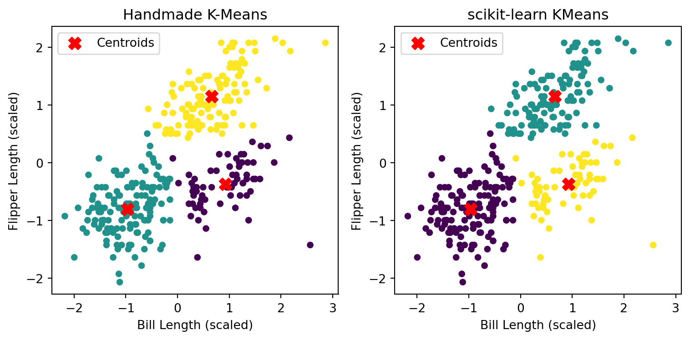
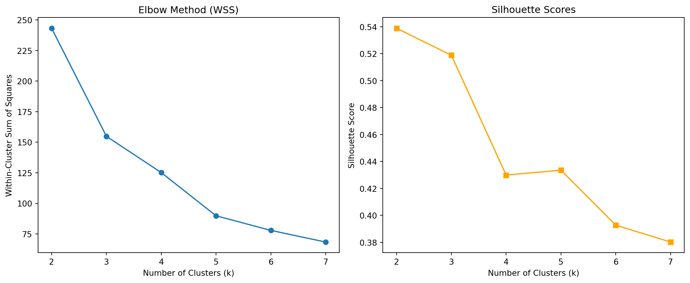
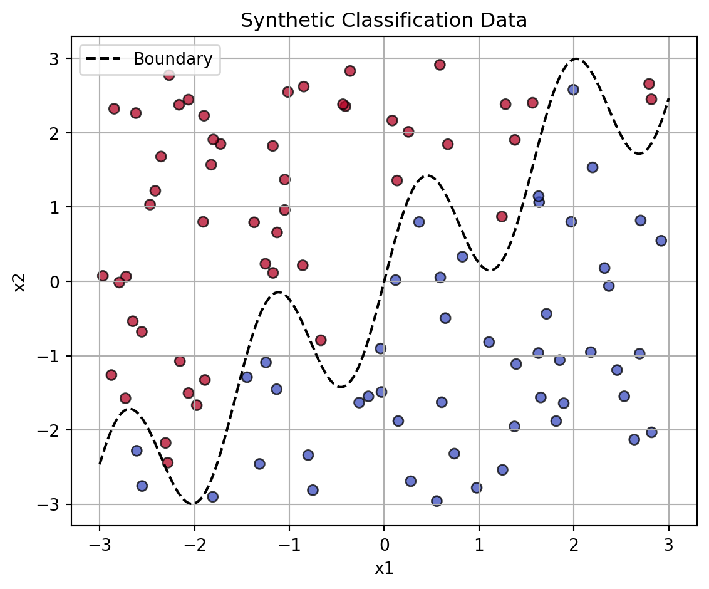
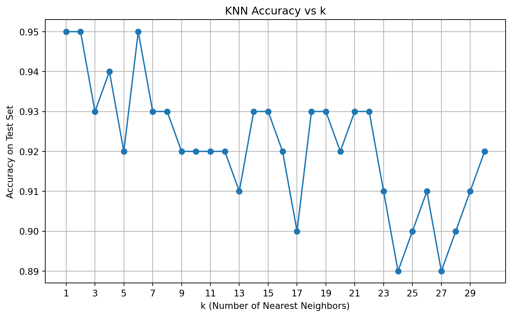
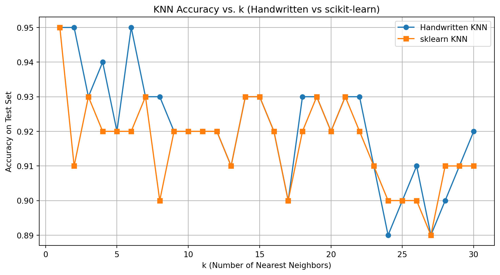

import pandas as pd
import numpy as np
import matplotlib.pyplot as plt
from sklearn.cluster import KMeans as SklearnKMeans
from sklearn.preprocessing import StandardScaler
df = pd.read_csv("palmer_penguins.csv")
data = df[["bill_length_mm", "flipper_length_mm"]].dropna().to_numpy()
scaler = StandardScaler()
data_scaled = scaler.fit_transform(data)
def euclidean(a, b):
return np.linalg.norm(a - b)
def initialize_centroids(X, k):
idx = np.random.choice(X.shape[0], k, replace=False)
return X[idx]
def assign_clusters(X, centroids):
clusters = []
for point in X:
distances = [euclidean(point, centroid) for centroid in centroids]
clusters.append(np.argmin(distances))
return np.array(clusters)
def update_centroids(X, labels, k):
return np.array([X[labels == i].mean(axis=0) for i in range(k)])
def kmeans(X, k, max_iter=100, tol=1e-4):
centroids = initialize_centroids(X, k)
for _ in range(max_iter):
labels = assign_clusters(X, centroids)
new_centroids = update_centroids(X, labels, k)
if np.all(np.abs(new_centroids - centroids) < tol):
break
centroids = new_centroids
return labels, centroids
# run mannual k-means
k = 3
labels_handmade, centroids_handmade = kmeans(data_scaled, k)Handcrafted and Library-Based Implementations of K-Means and KNN
1. K-Means
In this section, we implemented the K-Means clustering algorithm by hand, and applied it to the Palmer Penguins dataset. Specifically, we used two numeric features: bill length and flipper length. These were first standardized to improve clustering quality.
We compared the results of our handwritten K-Means algorithm to the built-in KMeans implementation from scikit-learn.
1.1 Implementation Overview
Our manual implementation of K-Means follows the standard iterative procedure:
- Initialize \(k\) centroids randomly from the dataset.
- Assign each data point to the closest centroid.
- Update centroids as the mean of the assigned points.
- Repeat steps 2 and 3 until convergence (no change or very small movement).
1.2 Visualization Results
Below is a comparison between the results from our handwritten implementation and scikit-learn’s built-in method (with 𝑘 = 3):

1.3 Analysis & Comparison
Both algorithms successfully identified three natural clusters in the penguin data. The centroid locations are slightly different but cluster structure is largely consistent. The minor differences are likely due to: - Initialization method: scikit-learn uses KMeans++, while our version uses random sampling; - Convergence tolerance and iteration limits; - Label permutations: cluster labels have no intrinsic meaning, so even different color orders can be equivalent.
1.4 Summary
We implemented the K-Means algorithm from scratch and applied it to the Palmer Penguins dataset using two numeric variables: bill_length_mm and flipper_length_mm. The results show that our custom algorithm was able to identify three distinct clusters, which are visually consistent with those generated by the scikit-learn built-in KMeans function. The slight differences in centroid positions and point assignments are likely due to differences in initialization and convergence criteria. Overall, the experiment demonstrates a solid understanding of the K-Means clustering process and confirms the correctness of our implementation.
from sklearn.cluster import KMeans
from sklearn.metrics import silhouette_score
import matplotlib.pyplot as plt
wss = []
silhouette = []
K_range = range(2, 8)
for k in K_range:
kmeans = KMeans(n_clusters=k, random_state=42)
labels = kmeans.fit_predict(data_scaled)
wss.append(kmeans.inertia_)
silhouette.append(silhouette_score(data_scaled, labels))
If you want a challenge, add your plots as an animated gif on your website so that the result looks something like this.
2. K Nearest Neighbors
2.1 Synthetic Train Dataset & Visualization
In this section, we generated a synthetic two-dimensional dataset to simulate a binary classification problem suitable for evaluating a K-Nearest Neighbors (KNN) classifier. The dataset includes two numeric features, x1 and x2, where the class label y is determined by whether the point lies above or below a non-linear boundary defined by the function:
\[ x_2 = \sin(4x_1) + x_1 \]
This creates a challenging, non-linear separation in the feature space.
# gen data -----
np.random.seed(42)
n = 100
x1 = np.random.uniform(-3, 3, size=n)
x2 = np.random.uniform(-3, 3, size=n)
# define a wiggly boundary
boundary = np.sin(4 * x1) + x1
y = (x2 > boundary).astype(int)
df = pd.DataFrame({
'x1': x1,
'x2': x2,
'y': y
})
df['y'] = df['y'].astype('category')plt.figure(figsize=(6, 5))
scatter = plt.scatter(
df['x1'], df['x2'],
c=df['y'].cat.codes,
cmap='coolwarm',
edgecolor='k', alpha=0.75
)
# draw the wiggly boundary
x1_sorted = np.linspace(-3, 3, 300)
boundary_line = np.sin(4 * x1_sorted) + x1_sorted
plt.plot(x1_sorted, boundary_line, 'k--', label='Boundary')
plt.xlabel('x1')
plt.ylabel('x2')
plt.title('Synthetic Classification Data')
plt.legend()
plt.grid(True)
plt.tight_layout()
plt.show()
As shown in the plot, the dataset is split into two classes separated by a sinusoidal boundary. Points above the boundary are labeled as one class (e.g., red), while those below are labeled as the other (e.g., blue). This visual separation will later be used to evaluate the performance of KNN classifiers under varying values of \(k\). The sharp curvature in the boundary introduces complexity and non-linearity, making it an ideal benchmark for comparing different KNN settings.
2.2 Handwrite KNN Classification and Accuracy Evaluation
We implemented a K-Nearest Neighbors (KNN) classifier from scratch and applied it to a synthetic classification dataset with a non-linear boundary. The training dataset was generated in section 2.1, and here we created an independent test set using the same structure but with a different random seed.
np.random.seed(123)
n_test = 100
x1_test = np.random.uniform(-3, 3, size=n_test)
x2_test = np.random.uniform(-3, 3, size=n_test)
boundary_test = np.sin(4 * x1_test) + x1_test
y_test = (x2_test > boundary_test).astype(int)
df_test = pd.DataFrame({
'x1': x1_test,
'x2': x2_test,
'y': y_test
})
df_test['y'] = df_test['y'].astype('category')from collections import Counter
# calculate euclidean distance
def euclidean_distance(a, b):
return np.linalg.norm(a - b)
# handmade KNN classifier
def knn_predict(X_train, y_train, X_test, k):
predictions = []
for test_point in X_test:
distances = [euclidean_distance(test_point, train_point) for train_point in X_train]
nearest_indices = np.argsort(distances)[:k]
nearest_labels = y_train[nearest_indices]
most_common = Counter(nearest_labels).most_common(1)[0][0]
predictions.append(most_common)
return np.array(predictions)We evaluated the prediction accuracy for different values of 𝑘∈[1,30], comparing predicted labels with the true labels in the test set.
X_train = df[['x1', 'x2']].to_numpy()
y_train = df['y'].cat.codes.to_numpy()
X_test = df_test[['x1', 'x2']].to_numpy()
y_test = df_test['y'].cat.codes.to_numpy()
# repeat KNN for k from 1 to 30
accuracies = []
k_values = range(1, 31)
for k in k_values:
y_pred = knn_predict(X_train, y_train, X_test, k)
acc = (y_pred == y_test).mean()
accuracies.append(acc)
# visualize the accuracy
plt.figure(figsize=(8, 5))
plt.plot(k_values, accuracies, marker='o')
plt.xlabel("k (Number of Nearest Neighbors)")
plt.ylabel("Accuracy on Test Set")
plt.title("KNN Accuracy vs k")
plt.xticks(range(1, 31, 2))
plt.grid(True)
plt.tight_layout()
plt.show()
# find the optimal k
optimal_k = k_values[np.argmax(accuracies)]
print(f" Optimal k is {optimal_k} with accuracy {max(accuracies):.2f}")
Optimal k is 1 with accuracy 0.95The plot illustrates how test accuracy varies with the number of neighbors \(k\). We observed that the highest accuracy was achieved when \(k = 1\), which yielded 95% accuracy on the test set.
- Small \(k\) values (e.g., \(k = 1\)) are highly flexible and may overfit noise.
- Larger \(k\) values smooth the decision boundary, possibly underfitting complex patterns.
In this case, the decision boundary in the data is highly non-linear and localized, which favors a small \(k\). The overall trend confirms the importance of tuning \(k\) for best performance in KNN classification.
2.3 Comparison: Handwritten vs. scikit-learn KNN
To validate the correctness of our handwritten KNN implementation, we compared it with the standard KNeighborsClassifier from scikit-learn. For each ( k ), we computed the test accuracy using both approaches.
from sklearn.neighbors import KNeighborsClassifier
from sklearn.metrics import accuracy_score
# test KNN for k from 1 to 30 using sklearn
accuracies_sklearn = []
k_values = range(1, 31)
for k in k_values:
clf = KNeighborsClassifier(n_neighbors=k)
clf.fit(X_train, y_train)
y_pred = clf.predict(X_test)
acc = accuracy_score(y_test, y_pred)
accuracies_sklearn.append(acc)
Best k (Handwritten): 1 with accuracy 0.95
Best k (scikit-learn): 1 with accuracy 0.95Both the handwritten and scikit-learn versions of KNN produced highly consistent results:
- The best accuracy for both versions occurred at \(k = 1\), reaching 95%.
- The two curves closely align across all \(k\), confirming the correctness of the custom implementation.
This comparison validates the manual classifier and confirms that the performance characteristics—such as overfitting at small \(k\) and underfitting at large \(k\)—are consistent across both methods. It also demonstrates that implementing the core logic of KNN yields results comparable to professional library code, when done correctly.